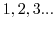
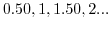
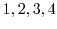

Next: mixer-master Up: Composition 002 Previous: Synopsis
[inlet start-stop] receives a Boolean value, 1 to start
the metro in the masterclock and 0 to stop it. Each time this
toggles the default period is broadcast and the clock period refreshed.
A toggle input box on the transport GUI sends this value. Also
on the transport GUI is a bang button which is received by [r zero]
to set the time counter back to 0.
[s trig] emits bangs on every single beat of the metro,
[s scoretime] sends a float representing the time for the conductor of the score,
[s drumtime] is always a beat ahead of the scoretime
[s synthtime] moves at half the regular rate. We don't use all these time values
in this composition but this is a useful way to output time values, so that score changes
can be processed one step ahead of the main timeline.
A1-transport-controls.pd
[+ 1] instead of from the float box. You could
chain these or add arbitrary increments or decrements to the timeline.
If you want a part to play 4 beats ahead add [+ 4] before its time inlet.
Beare of negative times that won't exist when the timebase is zero.
[/]. But this raises
interesting points to do with number lines and quantisation.
A timeline that is multiplied by an amount is stretched or shrunk
like a rubber band. If you are using select statements that work
on integer beat marks then you need to re-quantise with [int]
and [change]. If a timeline is doubled then it loses half
its resolution, but if it is squashed to half then its resolution
would double, if it were say audio tape, however it halves.
If we had an integer timeline
 and divide by 2
we get
, some of the values have become
non-integer. Although we can make any floating point number that
is a function of a periodically updated timebase it
is sampled at the rate of the timbase itself, which is when
message events occur. These two things, the value and the time it
is sent, are separate things. Using a rounding process two notes must now
fall into each event slot (pigeonhole principle). Going the other
way let's take a timeline
 and multiply it by
3. We get
[mod], [int],
[change] and [div], but it's recommended that if
you study this be aware it depends on the implementation
of [int], there are other ways of rounding numbers
that will break your compositions if you translate them or
the definition of [int] changes.
A2-masterclock.pd
Andy Farnell